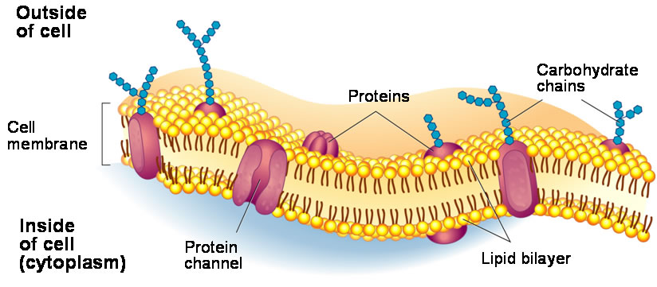

A cell membrane defines the boundary of the cell and determines the nature of its contact with the environment. Cells exclude some substances and take in others, all in controlled quantities.
All prokaryotes and eukaryotes have a plasma membrane made up of a phospholipid bilayer with embedded proteins that separates the internal contents of the cell from its surrounding environment. A phospholipid molecule is composed of two fatty acid chains, a glycerol backbone, and a phosphate group.
The plasma membrane regulates the passage of some substances, such as organic molecules, ions, and water, preventing the passage of some to maintain internal conditions (homeostasis), while actively bringing in or removing others. Other compounds move passively across the membrane.